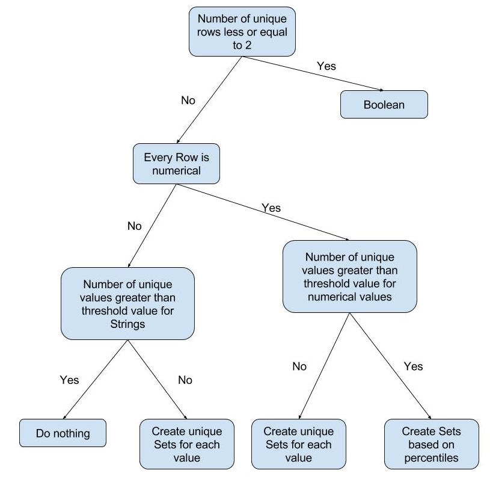

System Architecture
The system is comprised of three major components. The REST API, the Chart Engine and the Set Engine. Additionally there are several important subcomponents including general purpose Readers, Writers and a number of helper classes to help facilitate the running of each major component. Data is stored in a blob on Azure.
-
The Set Engine
This program generates sets and writes the sets to the Azure blob. The Set Engine does not need to know the structure of the database in order to generates the sets but splits tables into columns and generates sets based on the column data. The Set Engine should be run automatically a weekly basis using the Windows Task Scheduler to ensure data on the blob is up to date. After every run of the Set Engine results are emailed to whomever the user desires. -
The Chart Engine
The Chart Engine is a general purpose program for generating charts. The idea originally came from the fact that Team 1 were generating the charts based on our data. This can be very slow as we will need to send many sets to Team 1 in order for them to generate charts. If we instead move the Chart Engine to the backend then the charts can be generated much faster because no sets will be required to be sent to the frontend which can be very slow depending on the size of the set. -
The REST API
The REST API... -
Supporting Libraries
During the development of the three programs above we developed several libraries that were regularly used throughout the course of the project. The Blob Reader and Writer classes were the main classes that were used most extensively. Some additional important libraries include a Graph Retriever that is used to link the REST API to the Chart Engine, a database generation tool that we created to generate sample databases and a simple decision tree that we used to classify data types which was needed for the Set Engine.
Class Diagrams
We created a series of UML diagrams to help us visualise what the system should look like before implementation. The UML diagrams are displayed in Figures 1,2 and 3.


Design Pattern
Decision Tree Design: Singleton Ensure a class has only one instance, and provide a global point of access to it.
-
Singleton
There are a number of Singletons throughout our project. One notable pair of singletons is the Set Engine and its Decision Tree.
-
Model View Controller
We have implemented a controller design pattern in the REST API. Different controllers are responsible for controlling the flow of information for different classes of sets.
-
Fork/Join Pattern
The Fork/Join pattern was implemented in the Set Engine. A group of sets created would fork from the main thread then they would each create their own individual subsets. When the forked thread has uploaded its data onto the blob it will join with the main thread and wait for the others to finish.
-
Test Mode for complex functions
Due to the complexity of the Set Engine we encountered some difficulties testing the output. This was because the Set Engine would perform operations such as uploading data into the blob and write emails to staff informing them of the latest run. In order to counteract this we developed a design pattern to run unit tests on complex functions such as the Set Engine.
We created a Test Mode for the Set Engine. When in Test Mode a separate database for testing will be used. The Set Engine will avoid performing critical functions such as emailing clients. When the data is generated it will then be run against a series of unit tests. The idea is displayed in Figure 4 where the green path is the path taken when in Test Mode. Critical functions are avoided and a test suite is run.Figure 4: Diagram showing path taken by Set Engine in test mode (green) and in production (red)
-
Information Chaining
One major difficulty faced was retrieving information from Sets. Due to the size of the sets retrieving certain information was computationally expensive and took a long time. As a result we implemented a system of chaining information to retrieve certain attributes about the set without having to perform expensive computations against the entire set. (Figure 5)
Figure 5: Basic concept of chaining information
In the diagram above the "-info" identifier will return certain information regarding the set called "MySet".
- "-info-size" will return the size of the set.
- "-info-type" will return the type of the set.
Sequence Diagrams
During the development of our system we created several sequence diagrams. We used Creately to create the sequence diagrams.
Retrieving a Set
Figure 6: Sequence diagram for retrieving a set
When a GET requests arrives from the Front End it is received by the REST Controller. The Developer is encouraged to first retrieve the map of the sets so they know which sets they can call (Note that is is optional and recommended). The Front End then calls the Set which follows the same procedure but returns the full set.
Retrieving a Chart
Figure 7: Sequence diagram for retrieving a Chart object
Alternatively the developer can call a Chart object using the API by specifying the set (A) which will return the chart for set A.
Set Creation Process

Figure 8: Sequence diagram of the Set Engine
When the Windows Task Scheduler initiates the Set Engine to start the Set Engine beings by retrieving all tables from the database it specified to read from. The Set Engine then attempts to generate sets for each table in the database and sub sets using its Decision Tree. The Set Engine immediately pushes sets to the Azure Blob after each set is created. When all tables have been checked the Set Engine pushes a map to the blob that contains the location of each set it has created. The Set Engine then emails the system administrator with details on the latest run.
Data Storage
Entity Relationship Diagram of our mock database
Figure 9: ER Diagram of our mock database
We created a mock database to test the Set Engine. The above diagram shows the entity relationship of our mock database.
Decision Tree
Diagram of Decision Tree
Figure 10: Decision Tree implemented into the Set Engine
We decided to use a decision tree to classify data types. We implemented this decision tree into the Set Engine which allowed it to split the sets into subsets (e.g. percentiles).
Blob Structure
The Set Engine outputs a certain structure onto the Azure blob.
Development Tools
Azure: Azure VM, Azure Blob
Communication: Skype, Slack, Visual Studio Team Service
File Storage: One Drive
Version Control: GitHub
IDE: Visual Studio 2015, Xamarin